恭王府是乾隆年间一代宠臣和珅的府邸，后被赐给恭亲王奕䜣。
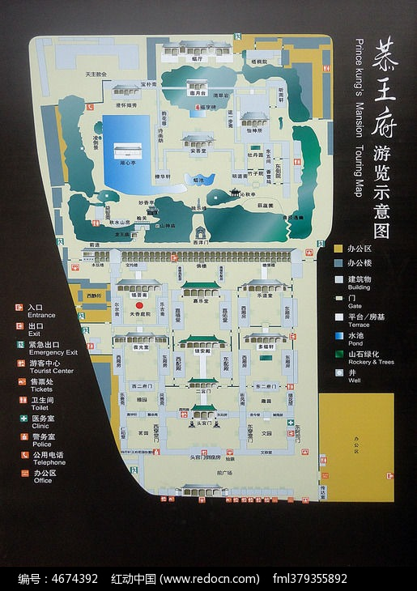
王府的大殿银安殿，又称银銮殿，在民国初年焚毁。现在的大殿是2008年根据历史资料重修的。后殿嘉乐堂是举行萨满教仪式的地方。据说嘉乐堂匾额为乾隆所题，但是没有落款。和珅曾留有“嘉乐堂诗集”。
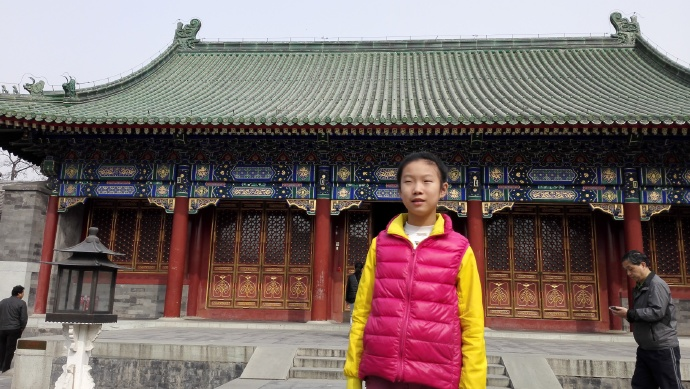
西院的葆光室据说有很厚的墙壁夹层，是和珅藏金子的地方。现在是和珅和奕䜣的展览，很详细，值得一看。葆光室北边的锡晋斋，是一座楠木打造的二层复式。清朝只有皇家建筑能够使用楠木，而且完全仿宁寿宫修建，也是和珅赐死时20大罪状之一。锡晋斋又叫天香庭院，院里两棵西府海棠，有学者认为即是红楼梦中的怡红院。恭王府内有天香庭院的匾额，为康熙21子慎郡王允禧手书，但是允禧死时和珅才8、9岁，所以不可能是送给和珅的。曹雪芹的祖父曾经请画家禹之鼎绘制一像，画上即题“天香满庭院”。
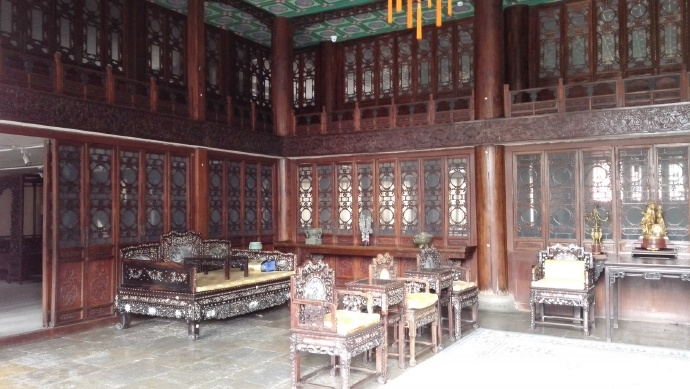
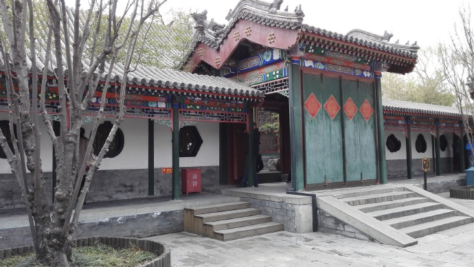
乾隆宠爱的十公主和孝固伦公主下嫁和珅长子丰绅殷德，东院即是和珅为其修建的公主府。多福轩院落里有一架古藤萝，已经有几百年了，又叫藤萝院。东院现举办“恭王府和红楼梦”展览。
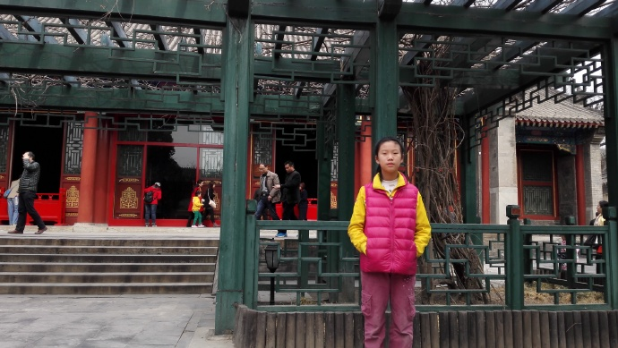
恭王府的后罩楼横贯东、中、西三路，长150余米，气势宏伟，共有房108间，俗称99间半。二层的窗户每间不同，据说是和珅藏宝的地方。
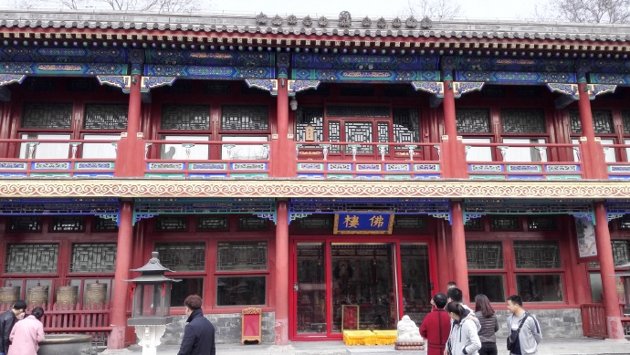
后花园的西洋门中西合璧，花饰精美，和圆明园中建筑风格类似。
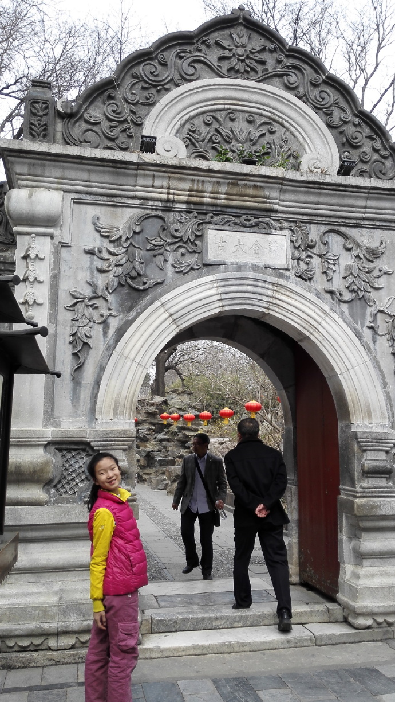
后花园中轴线由南至北分布着独乐峰、蝠池、福字碑和福厅，十足的福文化。
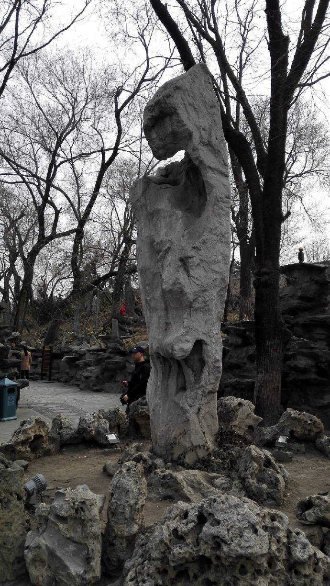
独乐峰是一整块5米高的太湖石，可以看到观音送子的形状，据说这块奇石第二年就给和珅送来了丰绅殷德。
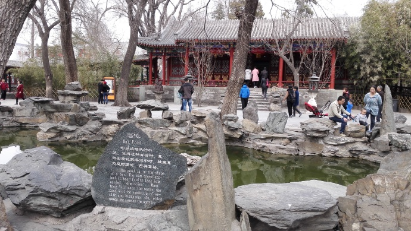
蝠池不大，形似蝙蝠，池边种满榆树，榆钱皆落入湖中。
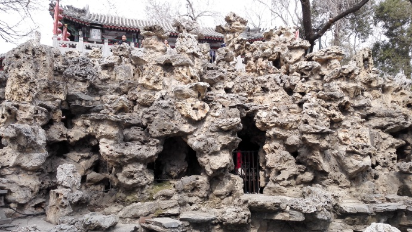
福字碑是康熙爷为孝庄太后祈福所书，后赐给和珅（也有说和珅从宫中盗出）。传说嘉庆帝抄和府时，想把福字碑运回宫中。但和珅把福字碑砌于龙脉之上，动福字 就会动龙脉，嘉庆一怒之下将其封死在花园假山中。60年代，周恩来一次偶然发现假山的形状非常像龙头，按说龙头下应该藏有宝物，于是组织发掘，福字碑才重 见天日。
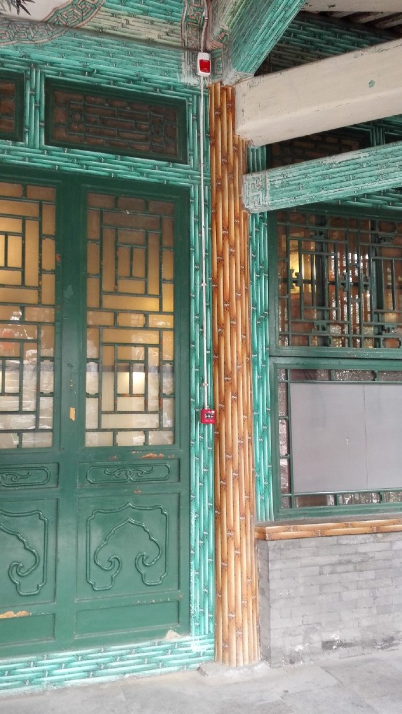
福厅是分为三间、形似蝙蝠的建筑，据说蝙蝠彩绘有9999只，加上福字碑正好是万福。福厅的梁柱彩绘均为香妃泪竹的图案，十分别致。
顺着花园东路假山中的羊肠小径（名为曲径通幽）穿过假山，可以看到一座八角亭名沁秋亭。亭中地面有形似寿字的弯曲水路，传说是和珅与当时的风雅名士仿效王羲之，斗酒作诗的场所。东路有一座幽静的竹子院，是和珅夫人的住所。和珅这位夫人当是第一有福之人了，和和珅共度了所有的荣华富贵，并且在嘉庆三年去世。而嘉庆十年正月和珅就被抄家赐死了。这座竹子院有学者说就是红楼中的潇湘馆。竹子院往北是有名的大戏楼，据说戏楼里的彩绘全部都是紫藤，在西楼里看戏也犹如坐在紫藤架下面一样。
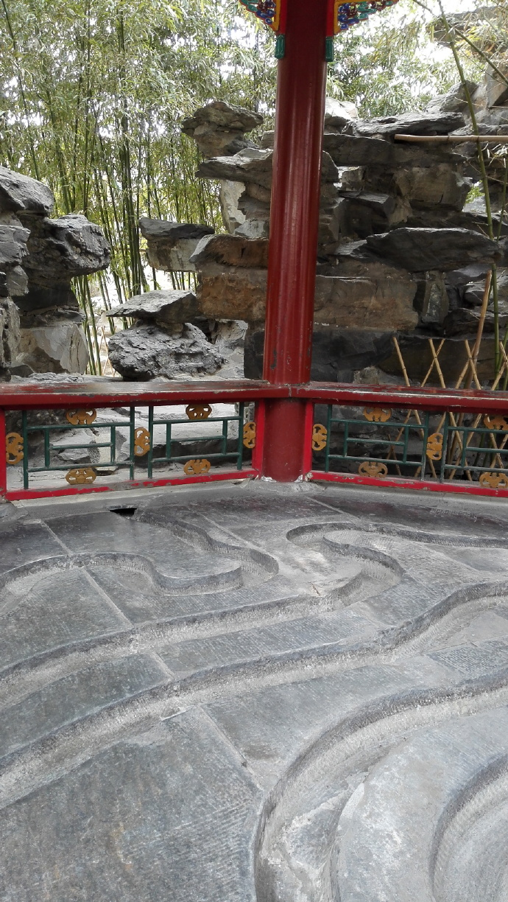
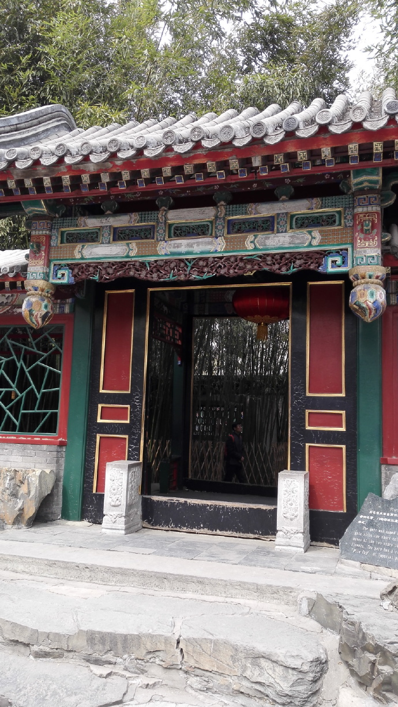
花园西路是一大片湖水，水中建有湖心亭以及四面临水的诗画舫，据说是红楼中的藕香榭。湖水和蝠池由“渡鹤桥”相隔，这个名字也是来源于红楼。
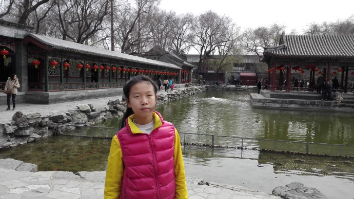